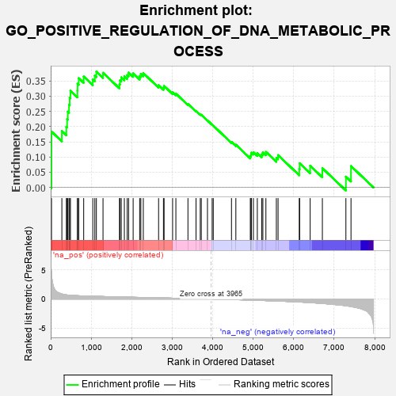

| | | Dataset | 7d |
| Phenotype | NoPhenotypeAvailable |
| Upregulated in class | na_pos |
| GeneSet | GO_POSITIVE_REGULATION_OF_DNA_METABOLIC_PROCESS |
| Enrichment Score (ES) | 0.38010526 |
| Normalized Enrichment Score (NES) | 1.4157696 |
| Nominal p-value | 0.030487806 |
| FDR q-value | 0.3273021 |
| FWER p-Value | 1.0 |
Table: GSEA Results Summary

Fig 1: Enrichment plot: GO_POSITIVE_REGULATION_OF_DNA_METABOLIC_PROCESS
Profile of the Running ES Score & Positions of GeneSet Members on the Rank Ordered List
| PROBE | GENE SYMBOL | GENE_TITLE | RANK IN GENE LIST | RANK METRIC SCORE | RUNNING ES | CORE ENRICHMENT | | 1 | H2AX | | | 20 | 4.738 | 0.1834 | Yes |
| 2 | HGF | | | 276 | 0.870 | 0.1854 | Yes |
| 3 | BAX | | | 387 | 0.711 | 0.1994 | Yes |
| 4 | NBN | | | 405 | 0.696 | 0.2246 | Yes |
| 5 | MLH1 | | | 423 | 0.679 | 0.2490 | Yes |
| 6 | ERCC1 | | | 453 | 0.660 | 0.2713 | Yes |
| 7 | WRN | | | 469 | 0.649 | 0.2949 | Yes |
| 8 | RFC2 | | | 488 | 0.635 | 0.3175 | Yes |
| 9 | PARN | | | 660 | 0.572 | 0.3184 | Yes |
| 10 | RFC3 | | | 663 | 0.571 | 0.3406 | Yes |
| 11 | MRE11 | | | 693 | 0.560 | 0.3589 | Yes |
| 12 | RFC4 | | | 815 | 0.528 | 0.3643 | Yes |
| 13 | AKT1 | | | 1040 | 0.476 | 0.3547 | Yes |
| 14 | RAD51 | | | 1090 | 0.466 | 0.3668 | Yes |
| 15 | SRC | | | 1128 | 0.459 | 0.3801 | Yes |
| 16 | DKC1 | | | 1292 | 0.431 | 0.3764 | No |
| 17 | ERCC8 | | | 1699 | 0.357 | 0.3392 | No |
| 18 | ERCC2 | | | 1712 | 0.354 | 0.3515 | No |
| 19 | MRNIP | | | 1743 | 0.346 | 0.3613 | No |
| 20 | MSH2 | | | 1819 | 0.334 | 0.3650 | No |
| 21 | PAK3 | | | 1889 | 0.322 | 0.3689 | No |
| 22 | MMS19 | | | 1924 | 0.317 | 0.3770 | No |
| 23 | HMCES | | | 2036 | 0.300 | 0.3748 | No |
| 24 | ATAD5 | | | 2197 | 0.277 | 0.3654 | No |
| 25 | CDK2 | | | 2226 | 0.272 | 0.3726 | No |
| 26 | XRCC1 | | | 2287 | 0.262 | 0.3753 | No |
| 27 | ARID2 | | | 2664 | 0.204 | 0.3358 | No |
| 28 | NSD2 | | | 2784 | 0.185 | 0.3280 | No |
| 29 | ATR | | | 2800 | 0.183 | 0.3333 | No |
| 30 | RTEL1 | | | 3010 | 0.148 | 0.3127 | No |
| 31 | TIGAR | | | 3091 | 0.138 | 0.3081 | No |
| 32 | RFC5 | | | 3389 | 0.091 | 0.2741 | No |
| 33 | MAPK3 | | | 3589 | 0.062 | 0.2514 | No |
| 34 | DHX9 | | | 3693 | 0.044 | 0.2401 | No |
| 35 | HSF1 | | | 3718 | 0.039 | 0.2386 | No |
| 36 | NEK2 | | | 3871 | 0.016 | 0.2200 | No |
| 37 | EYA1 | | | 3987 | -0.006 | 0.2057 | No |
| 38 | PARP1 | | | 4014 | -0.010 | 0.2028 | No |
| 39 | ERCC6 | | | 4464 | -0.087 | 0.1495 | No |
| 40 | PNKP | | | 4572 | -0.111 | 0.1403 | No |
| 41 | ATRX | | | 4929 | -0.184 | 0.1026 | No |
| 42 | XRCC5 | | | 4946 | -0.187 | 0.1079 | No |
| 43 | PRKDC | | | 4955 | -0.189 | 0.1143 | No |
| 44 | KLF4 | | | 5005 | -0.198 | 0.1159 | No |
| 45 | DDX11 | | | 5102 | -0.225 | 0.1126 | No |
| 46 | ATM | | | 5210 | -0.249 | 0.1089 | No |
| 47 | TNKS2 | | | 5239 | -0.254 | 0.1153 | No |
| 48 | RAD50 | | | 5314 | -0.276 | 0.1168 | No |
| 49 | NVL | | | 5572 | -0.338 | 0.0976 | No |
| 50 | GNL3 | | | 5614 | -0.349 | 0.1061 | No |
| 51 | TNKS | | | 6138 | -0.516 | 0.0603 | No |
| 52 | RNF8 | | | 6147 | -0.518 | 0.0796 | No |
| 53 | UBE2N | | | 6407 | -0.621 | 0.0713 | No |
| 54 | EGFR | | | 6708 | -0.765 | 0.0634 | No |
| 55 | PARP3 | | | 7289 | -1.158 | 0.0356 | No |
| 56 | NEK7 | | | 7415 | -1.285 | 0.0702 | No |
Table: GSEA details [plain text format]
Fig 2: GO_POSITIVE_REGULATION_OF_DNA_METABOLIC_PROCESS: Random ES distribution
Gene set null distribution of ES for GO_POSITIVE_REGULATION_OF_DNA_METABOLIC_PROCESS